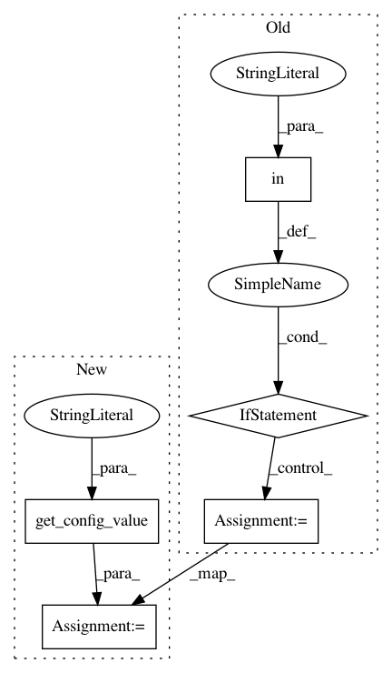

fda0e0e7d1399a404788c33d19677c4a22583138,src/sagemaker/local/local_session.py,LocalSagemakerRuntimeClient,__init__,#LocalSagemakerRuntimeClient#Any#,147
Before Change
self.http = urllib3.PoolManager()
self.serving_port = 8080
if config and "local" in config:
self.serving_port = config["local"].get("serving_port", 8080)
def invoke_endpoint(self, Body, EndpointName, ContentType, Accept):
url = "http://localhost:%s/invocations" % self.serving_port
r = self.http.request("POST", url, body=Body, preload_content=False,
headers={"Content-type": ContentType, "Accept": Accept})
After Change
self.http = urllib3.PoolManager()
self.serving_port = 8080
self.config = config
self.serving_port = get_config_value("local.serving_port", config) or 8080
def invoke_endpoint(self, Body, EndpointName, ContentType, Accept):
url = "http://localhost:%s/invocations" % self.serving_port
r = self.http.request("POST", url, body=Body, preload_content=False,
In pattern: SUPERPATTERN
Frequency: 3
Non-data size: 5
Instances
Project Name: aws/sagemaker-python-sdk
Commit Name: fda0e0e7d1399a404788c33d19677c4a22583138
Time: 2018-05-10
Author: nacho950@gmail.com
File Name: src/sagemaker/local/local_session.py
Class Name: LocalSagemakerRuntimeClient
Method Name: __init__
Project Name: aws/sagemaker-python-sdk
Commit Name: fda0e0e7d1399a404788c33d19677c4a22583138
Time: 2018-05-10
Author: nacho950@gmail.com
File Name: src/sagemaker/local/local_session.py
Class Name: LocalSagemakerClient
Method Name: create_endpoint
Project Name: hls-fpga-machine-learning/hls4ml
Commit Name: 1ce9211b9a1b349485c754d2dd3b03078f350fc8
Time: 2020-03-15
Author: yutaro.iiyama@cern.ch
File Name: hls4ml/writer/vivado_writer.py
Class Name: VivadoWriter
Method Name: write_project_cpp